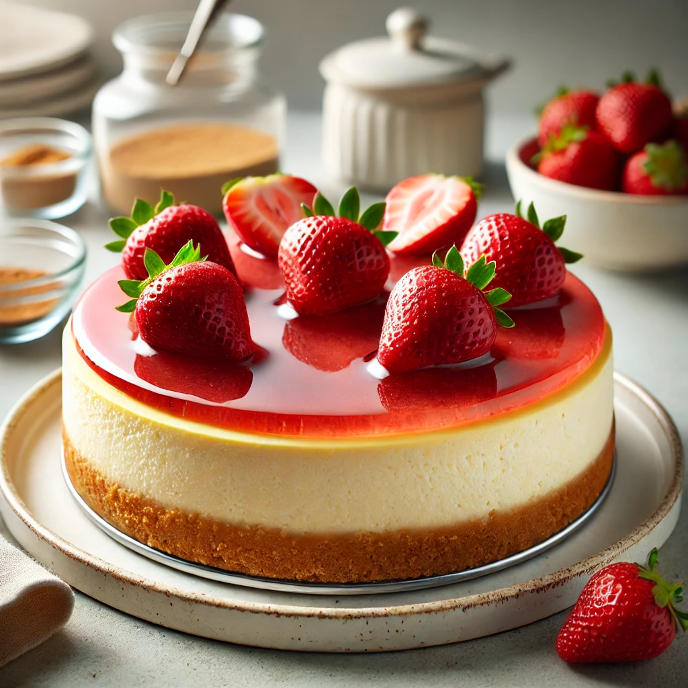

Cheesecake Recipe

This classic New York-style cheesecake is rich, creamy, and topped with a glossy strawberry glaze for a perfect dessert.
Ingredients
- 1 ½ cups graham cracker crumbs
- ¼ cup melted butter
- 24 ounces cream cheese, softened
- 1 cup white sugar
- 1 teaspoon vanilla extract
- 3 large eggs
- ½ cup sour cream
- 1 cup fresh strawberries for topping
Steps
- Prepare the crust: Mix graham cracker crumbs and melted butter. Press into the bottom of a springform pan.
- Make the filling: Beat cream cheese and sugar until smooth. Add vanilla, eggs one at a time, and sour cream.
- Bake the cheesecake: Pour the filling into the crust and bake at 325°F (160°C) for about 1 hour or until set.
- Cool and top: Let the cheesecake cool completely, then chill in the fridge for at least 4 hours. Top with fresh strawberries before serving.